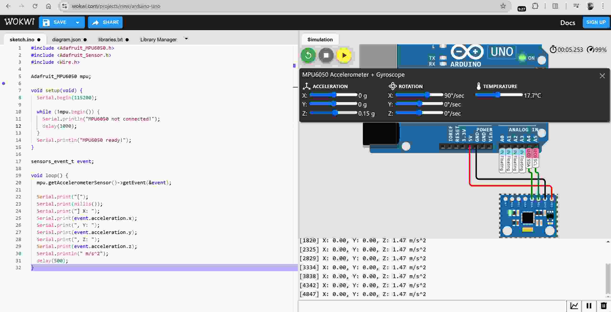
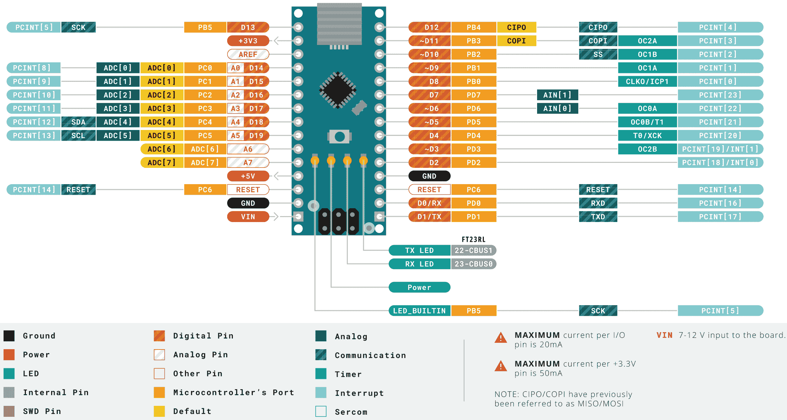

Table of contents
(Feature image from: Types of Arduino Boards – Quick Comparison on Specification and Features - Circuit Digest
Searched by arduino series in DDG image)
Simulation Platforms
::: aside References:
-
如何在线虚拟仿真Arduino？Arduino仿真软件介绍!_哔哩哔哩_bilibili
- Searched by
arduino 仿真实验室in DDG
- Searched by
- Arduino 用Proteus仿真基础知识和实例 - CSDN博客 (Found in s1)
- 欢迎使用Wokwi! | Wokwi Docs
- UnoArduSim：无需Arduino板即可学习Arduino编程和调试代码的模拟器 - 知乎
- 【工具推荐】Arduino仿真工具合辑 - CSDN博客
- Arduino 仿真 - 小鹏STEM
-
Best Arduino Simulators (Online & Offline): Our 11 Picks
- Searched by
Simulator for Arduinoin DDG
- Searched by
-
Fritzing电路仿真 - 萧驭 - 博客园
- Searched by
fritzing 仿真in DDG
- Searched by
-
Arduino Workshop-Piezo Knock Sensor - Hackster.io
- Searched by
Piezo electric disc experiments with Arduinoin DDG
- Searched by
- Supported Hardware - Docs - Wokwi
-
Build a circuit - Fritzing
- Searched by
fritzing breadboardin DDG
- Searched by
Notes:
(2024-10-23)
-
Tinkercad
(2024-10-25)
-
Able to simulate Piezo element.
-
Able to simulate Force Sensor (Prompted by keyword: “pressure”)
-
-
Proteus
-
Wokwi
-
Example of using I2C to read an acceleromotor: wokwi-mpu6050 6-Axis Accel & Gyro Sensor
 -
Don’t know how to simulate the communcation between two Arduino boards, as there is only one file:
sketch.inoin the code editor. -
Doesn’t have Piezo elements for simulation.It has a piezoelectric buzzer: wokwi-buzzer Reference - Wokwi Docs
-
Doesn’t have oscilloscope.It has Logic Analyzer for learning I2C protocol. (Found when browsing the Docs)
-
Most of the ‘Supported Hardware’ have associate libraries. (r10-Wokwi)
-
UnoArduSim
Fritzing
(2024-10-24)
-
Fritzing
-
Many hardware breadboard illustions (Piezo-demo) has a designation of this software.
-
Some review mentioned its simulation is so-so. (Frit-Cnblogs)
-
Versions after 1.0.0 are not free. I downloaded:
fritzing.0.9.3b.64.pc.zipfrom a 3rd party website.
(2024-12-03)
- The component: Mystery Part is used for searching a part that has the same properties you set to the “Mystery Part” r11-Circuit.
-
Import Components to Fritzing
-
Problems:
- How to add SparkFun components to fritzing?
::: aside
:::References
{{{ 1. [sparkfun/Fritzing_Parts](https://github.com/sparkfun/Fritzing_Parts) }}} -
Supports:
- “Core” –> “Import” r1-add
::: aside
:::References
{{{ 1. [How to add a new part to Fritzing? - Wiztaqnia](https://www.wiztaqnia.com/how-to-add-a-new-part-to-fritzing/)
Searched by `add external part to fritzing` at [DDG](https://duckduckgo.com/?q=add+external+part+to+fritzing&ia=web) }}}
Boards
Nano
References:
-
- Searched by
arduino nano pinsin DDG
- Searched by
-
Master Your Arduino Nano Pins with This Handy Guide! - YouTube - The Last Outpost Workshop Found in s1
-
Front
 * Image from [Arduino Nano — Arduino Official Store](https://store.arduino.cc/products/arduino-nano)
* Searched by `arduino nano pins` in
[DDG image](https://duckduckgo.com/?q=arduino+nano+pins&iax=images&ia=images)
* Image from [Arduino Nano — Arduino Official Store](https://store.arduino.cc/products/arduino-nano)
* Searched by `arduino nano pins` in
[DDG image](https://duckduckgo.com/?q=arduino+nano+pins&iax=images&ia=images)
-
Pinout

Notes:
(2024-10-28)
-
Nano’s pin-13 is the built-in on-board LED (r1-Docs).
-
Pins of Nano:
(2024-10-29)

-
Astands for Analog; -
Dstands for Digital; -
The bi-directional pins can be set as
INPUTorOUTPUTmodes; -
VINand Micro USB port CANNOT simultaneously plug in, as they both are input source.VINshould be input 7 - 12 V voltage.
-
RXandTXcan be used asINPUT/OUTPUTpins, as long theSeriallibrary is not called.
-